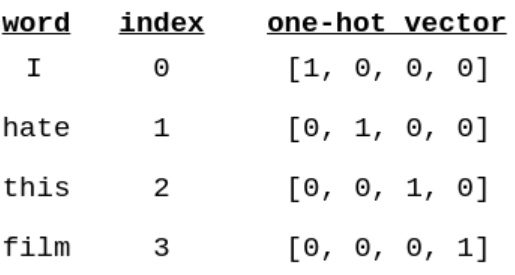

Simple#
Note#
Even thou the dataset used is from jiasaw which is different from imdb from the original tutorial dataset, the final accuracy during the evaluation is the same.
It covers: load data, create train/test/validation splits, build a vocabulary, create data iterators, define a model and implement the train/evaluate/test loop.
Imports & setup#
import numpy as np
import pandas as pd
import random
import torch
from torchtext.legacy import data
import os
%matplotlib inline
from IPython.core.interactiveshell import InteractiveShell
get_ipython().ast_node_interactivity = 'all'
CONFIG = {
'seed': 23
}
def set_seed(seed=42):
'''Sets seed so result unchanged - reproducibility'''
np.random.seed(seed)
torch.manual_seed(seed)
torch.cuda.manual_seed(seed)
# When running on the CuDNN backend, two further options must be set
torch.backends.cudnn.deterministic = True
torch.backends.cudnn.benchmark = False
# Set a fixed value for the hash seed
os.environ['PYTHONHASHSEED'] = str(seed)
set_seed(CONFIG['seed'])
df_train = pd.read_csv("../data/processed/train_mini.csv")
df_val = pd.read_csv("../data/processed/val_mini.csv")
# train_data, valid_data = df.split(random_state = random.seed(CONFIG['seed']))
df_val
| text | label | |
|---|---|---|
| 0 | Oppose For the sake of this decision, I don't ... | 0 |
| 1 | REDIRECT Talk:Shabab Al-Bireh Institute | 0 |
| 2 | Rutherford was a supporter of the Haultain gov... | 0 |
| 3 | I didn't do it \n\nI didn't add improperly cit... | 0 |
| 4 | "Hang on a minute, scobey. I'm Irish. I'd just... | 0 |
| ... | ... | ... |
| 995 | YOU ARE AN ASSHOLE | 1 |
| 996 | Ooooh, you blocked me, don't you feel all toug... | 1 |
| 997 | When did I mention GameSpot? IGN AND AMAZON WO... | 1 |
| 998 | Question? \n\nWhot u gonna die of? Cos ur like... | 1 |
| 999 | "\n\n ""yes, I'm involved paaerduag; get over ... | 1 |
1000 rows × 2 columns
vocabulary#
a look up table where every unique word in your data set has a corresponding index (an integer).

There are two ways effectively cut down our vocabulary, we can either only take the top n most common words or ignore words that appear less than m times. We’ll do the former, only keeping the top 25,000 words.
unk & pad token#
What do we do with words that appear in examples but we have cut from the vocabulary? We replace them with a special unknown or <unk> token. For example, if the sentence was “This film is great and I love it” but the word “love” was not in the vocabulary, it would become “This film is great and I <unk> it”.
Why is the vocab size 25002 and not 25000? One of the addition tokens is the
When we feed sentences into our model, we feed a batch of them at a time, i.e. more than one at a time, and all sentences in the batch need to be the same size. Thus, to ensure each sentence in the batch is the same size, any shorter than the longest within the batch are padded.
df_train.head()
| text | label | |
|---|---|---|
| 0 | Oppose For the sake of this decision, I don't ... | 0 |
| 1 | REDIRECT Talk:Shabab Al-Bireh Institute | 0 |
| 2 | Rutherford was a supporter of the Haultain gov... | 0 |
| 3 | I didn't do it \n\nI didn't add improperly cit... | 0 |
| 4 | "Hang on a minute, scobey. I'm Irish. I'd just... | 0 |
def unique_token(df):
results = set()
df['text'].str.lower().str.split().apply(results.update)
return len(results)
len_train = unique_token(df_train)
len_val = unique_token(df_val)
Dataframe as datasource in torchtext#
from torchtext.legacy.data import Field, Dataset, Example
class DataFrameDataset(Dataset):
"""Class for using pandas DataFrames as a datasource"""
def __init__(self, examples, fields, filter_pred=None):
"""
Create a dataset from a pandas dataframe of examples and Fields
Arguments:
examples pd.DataFrame: DataFrame of examples
fields {str: Field}: The Fields to use in this tuple. The
string is a field name, and the Field is the associated field.
filter_pred (callable or None): use only exanples for which
filter_pred(example) is true, or use all examples if None.
Default is None
"""
self.examples = examples.apply(SeriesExample.fromSeries, args=(fields,), axis=1).tolist()
if filter_pred is not None:
self.examples = filter(filter_pred, self.examples)
self.fields = dict(fields)
# Unpack field tuples
for n, f in list(self.fields.items()):
if isinstance(n, tuple):
self.fields.update(zip(n, f))
del self.fields[n]
class SeriesExample(Example):
"""Class to convert a pandas Series to an Example"""
@classmethod
def fromSeries(cls, data, fields):
return cls.fromdict(data.to_dict(), fields)
@classmethod
def fromdict(cls, data, fields):
ex = cls()
for key, field in fields.items():
if key not in data:
raise ValueError("Specified key {} was not found in "
"the input data".format(key))
if field is not None:
setattr(ex, key, field.preprocess(data[key]))
else:
setattr(ex, key, data[key])
return ex
build vocab#
def build_vocab(df, n_words):
TEXT = data.Field(tokenize = 'spacy',
tokenizer_language = 'en_core_web_sm')
LABEL = data.LabelField(dtype = torch.float)
fields = { 'label' : LABEL, 'text' : TEXT }
data_transformed = DataFrameDataset(df, fields)
MAX_VOCAB_SIZE = 0.1 * n_words
TEXT.build_vocab(data_transformed, max_size = MAX_VOCAB_SIZE)
LABEL.build_vocab(data_transformed)
return TEXT, LABEL, data_transformed
TEXT_train, LABEL_train, data_train = build_vocab(df_train, len_train)
TEXT_val, LABEL_val, data_val = build_vocab(df_val, len_val)
def print_vocab_info(TEXT, LABEL):
print(f"Unique tokens in TEXT vocabulary: {len(TEXT.vocab)}")
print(f"Unique tokens in LABEL vocabulary: {len(LABEL.vocab)}")
# view most common words in the vocab
print(TEXT.vocab.freqs.most_common(20))
# see the vocabulary directly using either the stoi (string to int) or itos (int to string) method.
print(TEXT.vocab.itos[:10])
# check label
print(LABEL.vocab.stoi)
print_vocab_info(TEXT_train, LABEL_train)
print()
print_vocab_info(TEXT_val, LABEL_val)
Unique tokens in TEXT vocabulary: 24528
Unique tokens in LABEL vocabulary: 2
[('.', 12066), (',', 10226), ('!', 8772), ('the', 8475), ('"', 7465), ('I', 6282), ('to', 6028), ('you', 5227), ('and', 4958), ('a', 4885), ('of', 4557), ('is', 3794), ('that', 3130), ('\n\n', 2936), (' ', 2719), ('\n', 2705), ('in', 2620), ('it', 2553), ('?', 2178), ('for', 1930)]
['<unk>', '<pad>', '.', ',', '!', 'the', '"', 'I', 'to', 'you']
defaultdict(None, {0: 0, 1: 1})
Unique tokens in TEXT vocabulary: 9556
Unique tokens in LABEL vocabulary: 2
[('.', 2747), (',', 2466), ('the', 2015), ('"', 1831), ('to', 1477), ('I', 1316), ('you', 1267), ('a', 1241), ('and', 1159), ('of', 1035), ('!', 992), ('is', 907), ('DIE', 723), ('WANKER', 714), ('that', 706), ('\n\n', 702), (' ', 696), ('\n', 690), ('in', 614), ('it', 605)]
['<unk>', '<pad>', '.', ',', 'the', '"', 'to', 'I', 'you', 'a']
defaultdict(None, {0: 0, 1: 1})
BucketIterator#
BATCH_SIZE = 64
device = torch.device('cuda' if torch.cuda.is_available() else 'cpu')
# train_iterator, valid_iterator, test_iterator = data.BucketIterator.splits(
# (train_data, valid_data, test_data),
# batch_size = BATCH_SIZE,
# device = device)
train_iterator, valid_iterator = data.BucketIterator.splits(
(data_train, data_val),
batch_size = BATCH_SIZE,
sort=False, # https://github.com/pytorch/text/issues/474
device = device)
Model#
import torch.nn as nn
class RNN(nn.Module):
def __init__(self, input_dim, embedding_dim, hidden_dim, output_dim):
super().__init__()
self.embedding = nn.Embedding(input_dim, embedding_dim)
self.rnn = nn.RNN(embedding_dim, hidden_dim)
self.fc = nn.Linear(hidden_dim, output_dim)
def forward(self, text):
#text = [sent len, batch size]
embedded = self.embedding(text)
#embedded = [sent len, batch size, emb dim]
output, hidden = self.rnn(embedded)
#output = [sent len, batch size, hid dim]
#hidden = [1, batch size, hid dim]
assert torch.equal(output[-1,:,:], hidden.squeeze(0))
return self.fc(hidden.squeeze(0))
INPUT_DIM = len(TEXT_train.vocab)
EMBEDDING_DIM = 100
HIDDEN_DIM = 256
OUTPUT_DIM = 1
model = RNN(INPUT_DIM, EMBEDDING_DIM, HIDDEN_DIM, OUTPUT_DIM)
def count_parameters(model):
return sum(p.numel() for p in model.parameters() if p.requires_grad)
print(f'The model has {count_parameters(model):,} trainable parameters')
The model has 2,544,705 trainable parameters
Evaluation#
import torch.optim as optim
optimizer = optim.SGD(model.parameters(), lr=1e-3)
criterion = nn.BCEWithLogitsLoss()
model = model.to(device)
criterion = criterion.to(device)
def binary_accuracy(preds, y):
"""
Returns accuracy per batch, i.e. if you get 8/10 right, this returns 0.8, NOT 8
"""
#round predictions to the closest integer
rounded_preds = torch.round(torch.sigmoid(preds))
correct = (rounded_preds == y).float() #convert into float for division
acc = correct.sum() / len(correct)
return acc
Define Train#
def train(model, iterator, optimizer, criterion):
epoch_loss = 0
epoch_acc = 0
model.train()
for batch in iterator:
optimizer.zero_grad()
predictions = model(batch.text).squeeze(1)
loss = criterion(predictions, batch.label)
acc = binary_accuracy(predictions, batch.label)
loss.backward()
optimizer.step()
epoch_loss += loss.item()
epoch_acc += acc.item()
return epoch_loss / len(iterator), epoch_acc / len(iterator)
def evaluate(model, iterator, criterion):
epoch_loss = 0
epoch_acc = 0
model.eval()
with torch.no_grad():
for batch in iterator:
predictions = model(batch.text).squeeze(1)
loss = criterion(predictions, batch.label)
acc = binary_accuracy(predictions, batch.label)
epoch_loss += loss.item()
epoch_acc += acc.item()
return epoch_loss / len(iterator), epoch_acc / len(iterator)
Timing#
import time
def epoch_time(start_time, end_time):
elapsed_time = end_time - start_time
elapsed_mins = int(elapsed_time / 60)
elapsed_secs = int(elapsed_time - (elapsed_mins * 60))
return elapsed_mins, elapsed_secs
Start train#
N_EPOCHS = 20
best_valid_loss = float('inf')
for epoch in range(N_EPOCHS):
start_time = time.time()
train_loss, train_acc = train(model, train_iterator, optimizer, criterion)
valid_loss, valid_acc = evaluate(model, valid_iterator, criterion)
end_time = time.time()
epoch_mins, epoch_secs = epoch_time(start_time, end_time)
if valid_loss < best_valid_loss:
best_valid_loss = valid_loss
torch.save(model.state_dict(), 'tut1-model.pt')
print(f'Epoch: {epoch+1:02} | Epoch Time: {epoch_mins}m {epoch_secs}s')
print(f'\tTrain Loss: {train_loss:.3f} | Train Acc: {train_acc*100:.2f}%')
print(f'\t Val. Loss: {valid_loss:.3f} | Val. Acc: {valid_acc*100:.2f}%')
Epoch: 01 | Epoch Time: 0m 9s
Train Loss: 0.693 | Train Acc: 49.95%
Val. Loss: 0.693 | Val. Acc: 51.07%
Epoch: 02 | Epoch Time: 0m 8s
Train Loss: 0.693 | Train Acc: 48.49%
Val. Loss: 0.693 | Val. Acc: 48.79%
Epoch: 03 | Epoch Time: 0m 7s
Train Loss: 0.693 | Train Acc: 48.04%
Val. Loss: 0.693 | Val. Acc: 48.79%
Epoch: 04 | Epoch Time: 0m 8s
Train Loss: 0.693 | Train Acc: 49.88%
Val. Loss: 0.694 | Val. Acc: 48.79%
Epoch: 05 | Epoch Time: 0m 8s
Train Loss: 0.693 | Train Acc: 48.64%
Val. Loss: 0.694 | Val. Acc: 48.79%
Epoch: 06 | Epoch Time: 0m 8s
Train Loss: 0.693 | Train Acc: 49.11%
Val. Loss: 0.694 | Val. Acc: 48.79%
Epoch: 07 | Epoch Time: 0m 8s
Train Loss: 0.693 | Train Acc: 49.28%
Val. Loss: 0.694 | Val. Acc: 48.79%
Epoch: 08 | Epoch Time: 0m 3s
Train Loss: 0.693 | Train Acc: 49.53%
Val. Loss: 0.693 | Val. Acc: 48.79%
Epoch: 09 | Epoch Time: 0m 3s
Train Loss: 0.693 | Train Acc: 50.15%
Val. Loss: 0.693 | Val. Acc: 51.07%
Epoch: 10 | Epoch Time: 0m 3s
Train Loss: 0.693 | Train Acc: 49.26%
Val. Loss: 0.693 | Val. Acc: 51.07%
Epoch: 11 | Epoch Time: 0m 3s
Train Loss: 0.693 | Train Acc: 50.07%
Val. Loss: 0.694 | Val. Acc: 48.79%
Epoch: 12 | Epoch Time: 0m 2s
Train Loss: 0.693 | Train Acc: 49.98%
Val. Loss: 0.693 | Val. Acc: 51.07%
Epoch: 13 | Epoch Time: 0m 3s
Train Loss: 0.693 | Train Acc: 50.55%
Val. Loss: 0.694 | Val. Acc: 48.79%
Epoch: 14 | Epoch Time: 0m 3s
Train Loss: 0.693 | Train Acc: 48.54%
Val. Loss: 0.694 | Val. Acc: 48.79%
Epoch: 15 | Epoch Time: 0m 3s
Train Loss: 0.693 | Train Acc: 50.27%
Val. Loss: 0.693 | Val. Acc: 51.07%
Epoch: 16 | Epoch Time: 0m 3s
Train Loss: 0.693 | Train Acc: 49.40%
Val. Loss: 0.693 | Val. Acc: 51.07%
Epoch: 17 | Epoch Time: 0m 3s
Train Loss: 0.693 | Train Acc: 50.57%
Val. Loss: 0.694 | Val. Acc: 48.79%
Epoch: 18 | Epoch Time: 0m 2s
Train Loss: 0.693 | Train Acc: 48.78%
Val. Loss: 0.694 | Val. Acc: 48.79%
Epoch: 19 | Epoch Time: 0m 3s
Train Loss: 0.693 | Train Acc: 50.00%
Val. Loss: 0.693 | Val. Acc: 51.07%
Epoch: 20 | Epoch Time: 0m 3s
Train Loss: 0.693 | Train Acc: 48.98%
Val. Loss: 0.693 | Val. Acc: 51.07%
Test#
model.load_state_dict(torch.load('simple-rnn.pt'))
test_loss, test_acc = evaluate(model, test_iterator, criterion)
print(f'Test Loss: {test_loss:.3f} | Test Acc: {test_acc*100:.2f}%')